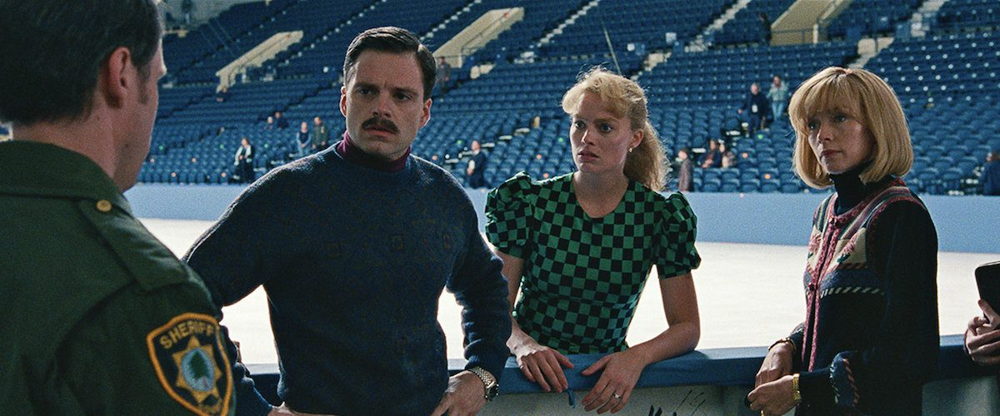
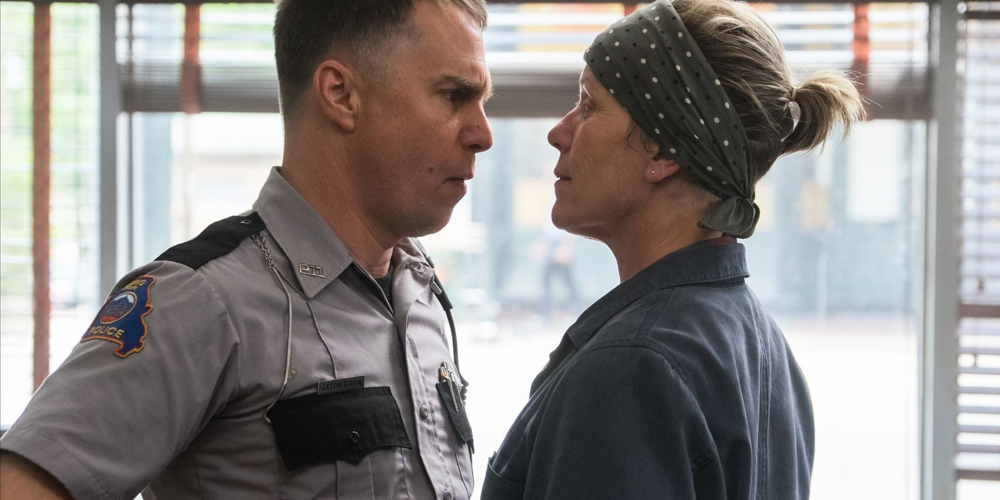
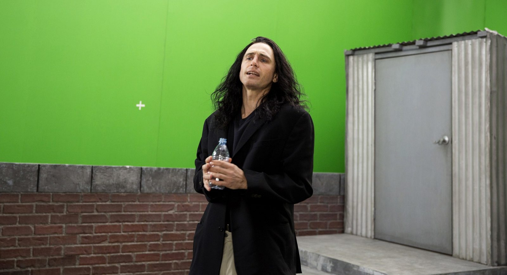

Cinéma
Le top des films 2018 (à fin mars)
Les "pas encore vus"
The Florida project, La douleur, Sparring, Burn out, Eva, Revenge, Hostiles, , Phantom Thread, Ladybird, Game Night, Ghostland,
Le top 2018 (à fin février)

I, Tonya, bande-annonce, ce film est juste génial ... et dire que tout est vrai ;-)

Three Billboards Outside Ebbing, Missouri), bande-annonce

Call Me by Your Name, bande-annonce
Ready Player One, bande-annonce

The Disaster Artist, bande-annonce
Mentions honorables
The shape of water, bande-annonce
Molly's game, bande-annonce, "Excellent début ... et puis .. ben c'est moins bien"
Commentaires 2
hwcfiercereadersornot, 2018-02-27 11:13
Perso, j'ai beaucoup aimé three billboards outside Ebbing, Missouri ;-)). J'ai aussi beaucoup aimé Molly's game, je suis fan de Jessica Chastain qui est sublime comme d'habitude! Pas encore vu I Tonya, mais je me souviens bien de cette histoire avec la belle Nancy Kerrigan et l'affreuse Tonya.
hwcfiercereadersornot, 2018-02-27 11:29
Ah oui, j'ai aussi énormément aimé Daniel Day Lewis dans Phantom Thread !! Je trouve qu'il devrait avoir l'oscar. J'ai beaucoup moins aimé l'interprétation de Gary Oldman dans Darkest Hour, mais c'est peut-être le film qui est raté qui m'a donné cette impression.